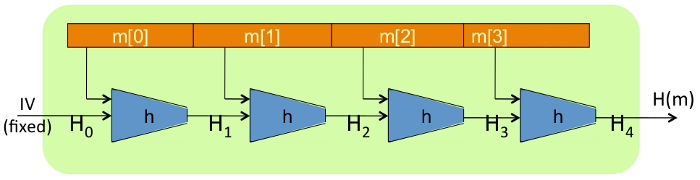

Introduction
A MAC (message authentication codeL1) plays a vital role in the world of cryptography. It ensures message integrity and combats active attacks1.
A MAC is often confused with a cryptograhic hash (i.e. SHA256). I think it was an unfortunate choice of words to use cryptographic hash, because as I will show , a cryptographic hash is not even designed to be secure.
This article aims to set things right. It will explain the following:
- What a cryptographic hash is.
- Why a cryptographic hash is insecure, and when it should be used.
- What a MAC is.
Cryptographic Hash Function
A cryptographic hash function exhibits four properties:
- Compression
- Pre-Image Resistance
- Weak Collision Resistance
- Strong Collision Resistance
The last two properties are known collectively as collision resistance. For what follows, assume a hash function \(H\) takes as input a message \(m\) and produces an output \(x\):
Compression
All hash functions exhibit compression, whereby an output that is much smaller than its input is produced. More formally, the size of the range (i.e. output) is much smaller than the size of the domain (i.e. input). Since computers represent everything using 0's and 1's, a mathematical description of compression in terms of computer science is:
Pre-Image Resistance
If given the output of a function, pre-image resistance implies that it is difficult to find the input which produced that output. So if only given \(x\) in equation \(\ref{hashex}\), it is difficult to find \(m\).
Weak Collision Resistance
Given an arbitrary message \(m_1\), weak collision resistance implies that it is difficult to produce another message \(m_2\) such that \(H(m_1) = H(m_2)\).
Strong Collision Resistance
Strong collision resistance means that is difficult to find any two messages that hash to the same value. That is, it is hard to find \(m_1\) and \(m_2\) such that \(H(m_1) = H(m_2)\).
Strong And Weak Collision Resistance Are Not The Same
Even though they seem similar, there is a subtle difference between strong and weak collision resistance. Weak collision resistance is bound to a particular input, whereas strong collision resistance applies to any two arbitrary inputs. As the name implies, it is more difficult to achieve strong collision resistance than weak collision resistance. This is because strong collision resistance implies weak collision resitance, yet, having weak collision resistance does not imply strong collision resistance2.
Message Integrity
Message integrity is the process of ensuring that a message is not altered during transmission. For networking, various protocols have been built to ensure message integrity, like the ever popular and ubiquitous TCP protocol that ensures message integrity by using various mechanism including cyclic redundancy checkingL3 (CRC). CRC works well against message integrity being compromised by a network error, but it cannot defend against an active attack: Someone purposefully trying to alter the message payload during transmission.
Message Tag
A message tag is used to defend against an active attack. A message is transmitted along with its tag to a recipient. The recipient then computes their own tag on the received message, and if it matches the transmitted tag, message integrity is assured.
An informal security definition for a tag is to make it impossible for an attacker to produce a new message with a valid tag. Being able to produce a new message with a valid tag is called an existential forgery: Any successful tagging scheme must protect against existential forgery.
A Cryptrographic Hash Cannot Protect Against Existential Forgery
A crypgtographic hash (like the SHA-2L4 family of hashes - e.g. SHA256) is susceptible to an existential forgery. This is due to its construction method that does not use any secret.
Merkle–Damgård And Davies-Meyer Construction
A block cipher is an encryption mechanism that takes a fixed input of size n bytes, and produces an encrypted output also of size n bytes. There are many block ciphers, and the field has been studied intensely (AESL5 is an example). Block ciphers exhibit many of the properties of a crytographic hash, therefore it would be nice if they could be used to construct a cryptographic hash. And it turns out that they can: Any secure block cipher can be quickly altered (normally by a method called Davies-MeyerL6) to have all the properties of a cryptographic hash function except compression. Block ciphers need two inputs which are kept secret: A key and a message. Therefore a cryptographic hash function made from a block cipher also needs two inputs, but unlike a block cipher, neither input is kept secret (read up more on Davies-MeyerL6 to understand these inputs). So how does one get the compression property? It is done using a construction called Merkle–Damgård.
The Merkle–Damgård construction takes as input a message of arbitrary length and produces a cryptographic hash of fixed output. It does this by breaking the message up into blocks, then feeding the blocks iteratively into a smaller cryptographic hash function (such as the one discussed in the above paragraph). The output of each function is fed as one of the inputs into the next function. The very first function just has a non-random set initialisation vector (IV) set as one of the inputs.
The image below demonstrates the Merkle–Damgård construction. In this image, h is the cryptographic hash created from the block cipher, and \(H_n\) is the resulting outputs of each stage. Note how the output of one function is chained to one of the inputs of the other.

Merkle–Damgård Is Not Secure
All our popular cryptographic hash functions are constructed using Merkle–Damgård, but it is very easy to mount an existential forgery attack on anything constructed using the Merkle–Damgård. This is because cryptographic hash functions created with Merkle–Damgård are not designed to be protected from existential forgery (more about this a little later). To see how an existential forgery can happen, study the Merkle–Damgård construction picture. An existential forgery can happen by doing the following:
- Obtain a valid message tag pair, say \((M, t_0)\).
- Create a new block called \(b\).
- Now, using a cryptographic hash function (like a Davies-Meyer construction), feed it both \(t_0\) and \(b\) as inputs, and record the output as \(t_1\).
- The pair \((M||b, t_1)\) is a valid message tag pair (\(M||b\) means \(M\) concatenated with \(b\)).
And so we can very easily make an existential forgery attack for any cryptographic hash function. NOTE: For any cryptographer who reads this, I have purposefully ignored padding in Merkle–Damgård (so in reality, the valid message tag pair should be \((M||pad||b, t_1)\)).
The Purpose Of Cryptographic Hashes
A Cryptographic hash's purpose is not to provide message integrity. As will be shown shortly, one needs to have a secret in order to attain message integrity. A cryptographic hash is just a compression function with the extra properties as defined above. This is a very unfortunate choice of name, because most people think that anything with the name crypto means it is secure. In this case, it is not! I think it was named cryptographic hash because the crypto guys made the machinery in order to make it possible.
So if it is not secure, does it have any use? Yes, it has tonnes of uses. Just not for message integrity. Here are three uses:
- A function to assign inputs to buckets of a hash table. If I have to guess (and this is just a guess), I would say that this is why cryptographic hash functions were invented in the first place - as hash table functions (hence the name hash). A cryptographic hash function is in many ways the perfect hash function, as it exhibits secure psuedo-randomness and therefore it is very difficult to determine a pathalogical input data-set for the hash table. Unfortunately, it is quite slow compared to what is needed of hash table functions.
- Integrity from a trusted source - note, the source must be trusted. For example, you download a file from a website you trust. This trusted website has a SHA crytographic hash signature. You calculate your own hash on the file you have just downloaded, and then compare. If they match (again, it is so important that you trust the web site), then you know your code has not been altered.
- A means to discover changes in files. Due to collision resistance, if a file changes, its hash will also change (with high probability). This is used to detect changes in such applications as gitL7 (and others, I am sure).
Secure Cryptographic Hash
How does one achieve message integrtity? The answer: A secure cryptogrphic hash. This is an example of a MACL1 and since MAC sounds so different to cryptographic hash, cryptograhers don't get confused (A MAC is more general than a secure cryptographic hash, but a secure cryptographic hash is definitely an example of a MAC).
A secure cryptogrpahic hash is a cryptographic hash that also involves a secret, and this secret is used to "lock" the final tag value in place. Remember when describing the function used in Merkle–Damgård (normally created with Davies-Meyer construction), there is no secret involved. And this is achilles heel for Merkle–Damgård with respect to existential forgery.
Merkle–Damgård is adapted to use secret keys resulting in HMACL8 (which short for hashed based message authenticating code). An attacker would need to know the value of the secret key in order to mount an existential forgery attack. However, the key is a secret shared only between the two communicating parties (there is a whole class of study that is devoted to sharing a key securely between two parties - the interested reader can read about Diffie-HellmanL9). This makes an existential forgery attack impossible.
Conclusion
A cryptographic hash is not secure! In order for any hash to be secure, there needs to be a secret known only to the sender and the recipient. This secret is used as a key to lock the hash compression function in place.
So your cryptographic hash is not secure and cannot be used for message integrity without a shared secret!
Links
- http://en.wikipedia.org/wiki/Message_authentication_code
- http://stackoverflow.com/questions/8523005/what-is-the-difference-between-weak-and-strong-resistance#8542254
- http://en.wikipedia.org/wiki/Cyclic_redundancy_check
- http://en.wikipedia.org/wiki/Sha256
- http://en.wikipedia.org/wiki/Advanced_Encryption_Standard
- http://en.wikipedia.org/wiki/Davies-Meyer#Davies.E2.80.93Meyer
- http://en.wikipedia.org/wiki/Git_%28software%29
- http://en.wikipedia.org/wiki/Hmac
- http://en.wikipedia.org/wiki/Diffie_hellman
- An active attack is an attack whereby the message payload is changed tricking both communicating parties. ↩
- A great explanation of this concept is this stackoverflow explanationL2. ↩